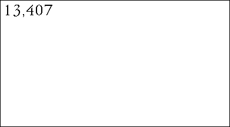

| S = 2, N = 3 gives 2(23) = 28 = 256
rules. |
| * Spending one minute investigating each rule, one person could see all the possibilities
in 4 and 1/4 hours, a single afternoon. |
| S = 2, N = 5 gives 2(25) = 232 =
4,294,967,296 rules. |
| * At one second per rule, a person would have to work 24 hours a
day, every day without interruption for 136 years. |
| S = 2, N = 9 (two-dimensional Moore neighborhood automata)
gives 2(29) = 2512 rules. |
|  |
| Click the picture to see how large 2512 is. |
|
| If every elementary particle in the
universe were a supercomputer examining a trillion CA per second, starting at the
Big Bang, by now only one part in 1044 would have been examined. |
| Failing some fundamental advance in the physics of computation (quantum computers
working
at superstring frequencies?), we will never, Never, NEVER see all the possibilities. |
| What happens for S = 3? |
| As a hint of what this small increase in
S will do, note that for N = 3 we have 3(33) =
7,625,597,484,987 rules. |
| Recall there are 256 rules for S = 2 and N = 3. |
| For S = 3 and N = 9 there are 3(39) = 109392
rules. |